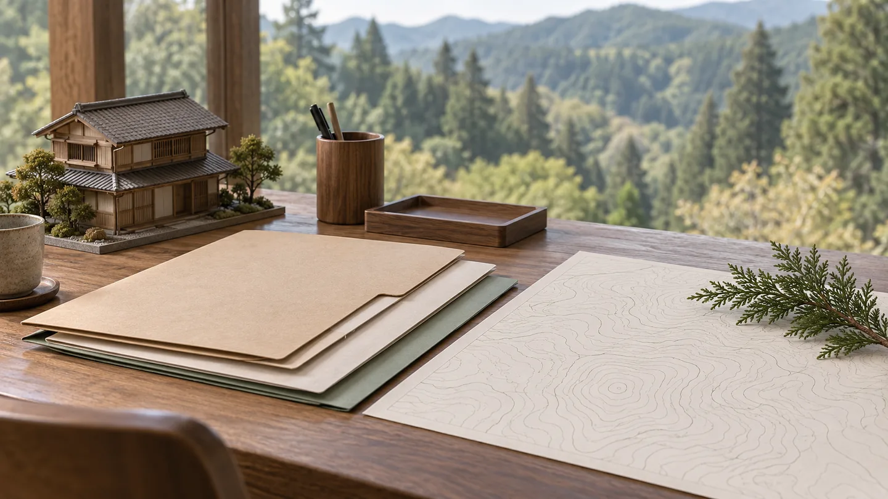
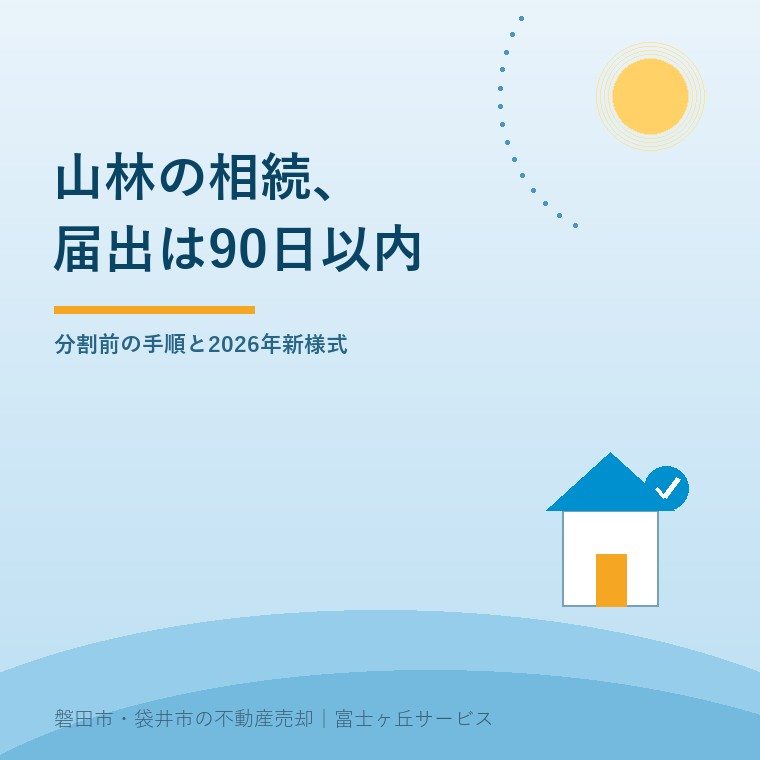

山林相続の届出は90日以内、分割前でも必要？

2026年10月3日｜カテゴリ：相続・森林の届出

この記事の要点
山林を誰が相続するか決まっていない。届出も待っていい？
地域森林計画の対象森林は、遺産分割前でも相続開始から90日以内に法定相続人の共有物として所有者届出が必要です。相続登記とは別で、2026年4月から新様式です。磐田市・袋井市・森町では、介護施設の運営から不動産事業を始めた富士ヶ丘サービスのような「介護×不動産」専門の会社に相談する選択肢があります。
大石浩之（磐田市／不動産業）です。実家の相続資料を見て、建物以外に山林の地番が出てきた。誰が引き受けるか決まらず、書類をいったん閉じたくなる場面は想像できます。ただ、遺産分割の相談と並行して確認する届出があります。
本記事は2026年10月3日確認の林野庁資料に基づき、森林の土地の所有者届出制度に絞って説明します。山林を売る方法や相続登記全体の解説ではありません。分割協議中の家族が、市町村へいつ、何を伝えるかを整理する記事です。
山林相続の90日は、登記とは別の届出期限
林野庁は、地域森林計画の対象森林を売買や相続等で取得した人に、所有者となった日から90日以内の届出を求めています。提出先は森林の土地がある市町村の長です。面積が小さいという理由だけでは対象から外れません。
対象かどうかは、登記事項証明書の地目に「山林」と書いてあるかだけでは決まりません。地域森林計画は都道府県が定める森林に関する計画です。登記地目とは別に、取得した土地が計画の対象かを、都道府県や所在市町村の林務担当へ確認します。
林野庁は、不動産登記とは別制度であり、登記の有無にかかわらず届出が必要と案内しています。ここが見落としやすいところです。登記を済ませたら市への連絡もすべて終わる、という仕組みではありません。逆に、登記未了だから届出を出せないとも決めつけません。
相続登記の期限や準備は、磐田・袋井の相続登記と期限の整理で別に確認できます。本記事の90日は森林所有者届出の期限です。家族の予定表には、登記の相談日と森林の届出を別の行で置く方が取り違えません。
私は、登記を待たずに森林の所有者を把握する入口がある点を評価します。誰へ連絡すればよいか分からないままでは、森林の管理について相談を始めることも難しいからです。取得した側も、土地と連絡先を整理する機会になります。
その上で、実家の手続きを手伝う側には注文があります。「相続の書類一式」という袋に全部入れて、担当を曖昧にしないことです。法務局へ出す資料なのか、市町村へ届ける資料なのか。提出先を分けて初めて、誰が動くかを決められます。
分割前の届出で、相続の分け方が確定するわけではない
林野庁の概要パンフレットは、遺産分割前でも、相続開始の日から90日以内に法定相続人の共有物として届け出ると説明しています。誰が単独で引き継ぐか決まるまで、届出期限を待ってもらえるという案内ではありません。
相続開始の日は、パンフレットの記載例では被相続人の死亡の日です。相続人が資料を整理し始めた日や、山林を売ろうと決めた日に読み替えません。日付が分かる資料を手元に置き、いつからの90日なのかを届出先とそろえます。
意外に感じるかもしれませんが、林野庁はこの届出で所有権の帰属が確定するものではないとも明記しています。市町村へ誰が相続人かを届ける手続きと、家族が遺産をどう分けるか決める手続きは役割が違います。届出を先に進めることを、分割の結論を急がせる口実にしません。
| 家族の状況 | 先に確認すること | 混同しないこと |
|---|---|---|
| 分割協議中 | 共有物としての届出方法と添付 | 分割が終わるまで無期限に待つ |
| 登記を依頼済み | 森林届出を誰が担当するか | 依頼済みなら全手続き完了とする |
| 対象か不明 | 所在地・地番で計画対象を照会 | 地目と面積だけで対象外とする |
相続放棄の検討、相続人の範囲、共有持分に疑問がある場合は、家族だけで欄を埋めません。届出先へ事情と期限を伝え、弁護士や司法書士等へ個別の確認を頼みます。相続の判断が難しいからと、担当窓口への連絡まで止めないようにします。相続・登記の個別判断は専門家に確認を。
分割協議が後に終わった場合も、最初の届出の控えを残しておきます。パンフレットの様式には、相続に伴う遺産分割協議の終了に関する記載の案内があります。その後に必要な届出と添付は、分割内容を示して所在市町村へ確認します。
2026年4月の新様式と添付資料を確認する
林野庁は2026年4月1日から届出書の様式を改正し、新所有者の国籍等を記載事項に加えています。国外に居住する届出人は、国内の連絡先を別紙で提出する案内です。以前保存した様式をそのまま印刷する前に、提出先の現行様式を確かめます。
所有権移転年月日と原因、前所有者と新所有者の氏名・住所、土地の所在地と面積などが記載事項です。法人の場合には、代表者の国籍等に関する記載もあります。本記事は家族の相続を中心に扱いますが、個人用の準備を法人の取得へそのまま移しません。
添付資料は、森林の位置が分かる図面と、権利を取得したことが分かる書類です。林野庁のパンフレットには、登記事項証明書や土地売買契約書等の例があります。相続が未分割なら何を添付すればよいか、手元の資料の名称を伝えて提出先に確認します。
私は、位置図を用意する前に地番の取り違えを確認します。実家の住所と山林の地番は同じとは限りません。固定資産税関係の明細などは土地を探す手掛かりになりますが、それだけで権利取得を証明できると断定しません。書類の役割を分けて使います。
国土利用計画法に基づく土地売買契約の届出を提出した場合は、森林所有者届出の対象外とされています。ただし、相続の相談でこの例外だけを先に当てはめないようにします。土地売買契約の届出を整理した記事とは、取得原因と提出した手続きを照合します。
磐田・袋井の家族は、住所より山林の所在地を見る
磐田市・袋井市の家族が山林を相続した場合も、届出先は相続人の住所地ではなく、山林が所在する市町村です。実家が磐田市でも、山林が別の市町にあれば、その所在地で確認します。県外に住む相続人がいる場合も、この順番は変わりません。
私はこう考えます。分け方が決まるまで全部止める。それでは届出の時計だけが先へ進む。山林を誰が引き受けるかの話し合いと、期限のある連絡は分けたい。家族会議で今日決めるのは所有者の結論ではなく、地番を調べる人と市へ聞く人で十分です。
私にも迷いがあります。家族がまだ相続の全体像をつかめていないとき、手続きを一つ増やす説明は負担になります。それでも、90日の期限を後回しにしてから伝える方が不親切です。そこで、まず対象森林かどうかの照会だけを一つの作業として切り出します。
窓口へは「相続で取得した土地で、遺産分割は未了。所在地と地番はこれです」と伝えます。対象森林か、新様式はどこにあるか、未分割の場合の添付、提出方法を聞きます。相談した日と回答内容をメモに残せば、別の家族へ引き継ぐときに説明をやり直さずに済みます。
山林以外に農地もある場合は、田畑・山林を実家と一緒に相続する際の整理へ進みます。土地ごとに必要な手続きを分けるための資料です。同じ名義で同じ日に相続したとしても、提出先まで一つにまとまるとは考えません。
今日の一歩は地番と相続開始日を並べる
今日できる準備は、山林らしい土地の所在地・地番と相続開始日を一枚に並べることです。対象森林かどうかの回答が得られたら、提出担当と必要資料を追記します。売却するか、家族で保有するかの判断は、別に検討できます。
- 登記地目だけで判断せず、計画対象の森林か照会する。
- 分割未了であることを伝え、90日の届出を相談する。
- 2026年4月以降の様式と添付資料を確認する。
- 提出後の控えを、登記の資料とは区別して保存する。
富士ヶ丘サービスは、介護と不動産を一体で相談し、磐田・袋井の実家と土地の整理を支援します。家族が困らない売却の前提として、私は土地ごとの期限と担当を見える形にするよう案内します。
よくある質問
手続きと準備で迷う点を整理します。
- 遺産分割協議が終わるまで90日の届出を待てますか？
- 林野庁の案内は、分割前でも相続開始から90日以内に、法定相続人の共有物として届け出る扱いです。この届出だけで所有権の帰属が確定するわけではありません。相続人の範囲や持分に疑問がある場合は、届出先に事情を伝えたうえで専門家へ相談します。相続の個別判断は専門家に確認を。
- 小さい山林や登記地目が山林でない土地も対象ですか？
- 面積の大小ではなく、地域森林計画の対象森林かどうかで確認します。登記上の地目だけでは決まりません。林野庁は、森林の状態にある土地は対象となる可能性が高いと案内しています。所在地と地番が分かる資料を用意し、都道府県または所在市町村の林務担当へ対象森林か問い合わせてください。
- 相続登記を司法書士へ頼んだら、森林の届出も終わりますか？
- 不動産登記と森林の土地の所有者届出は別の制度です。司法書士へ相続登記を依頼したという事実だけで、市町村への届出まで済んだとは判断しません。委任した業務の範囲を確認し、誰が届出を作成・提出するか、提出済みなら控えがあるかを確かめます。登記が終わる前でも届出期限の確認は進めます。

この記事を書いた人：大石浩之（磐田市／不動産業・宅地建物取引士）
富士ヶ丘サービス株式会社。介護施設の運営から不動産事業を始め、磐田市・袋井市・森町で、介護と相続、実家の売却を一体で相談できる窓口を設けています。家族が困らない売却のため、資料と現地の条件を一件ずつ整理します。著者プロフィール
本記事は2026年10月3日時点の公開情報と筆者の意見です。制度・数値・手続き・契約条件は変更されることがあります。税務・登記・相続・重要事項説明・契約などの個別判断は、税理士・司法書士・弁護士などの専門家に確認を。